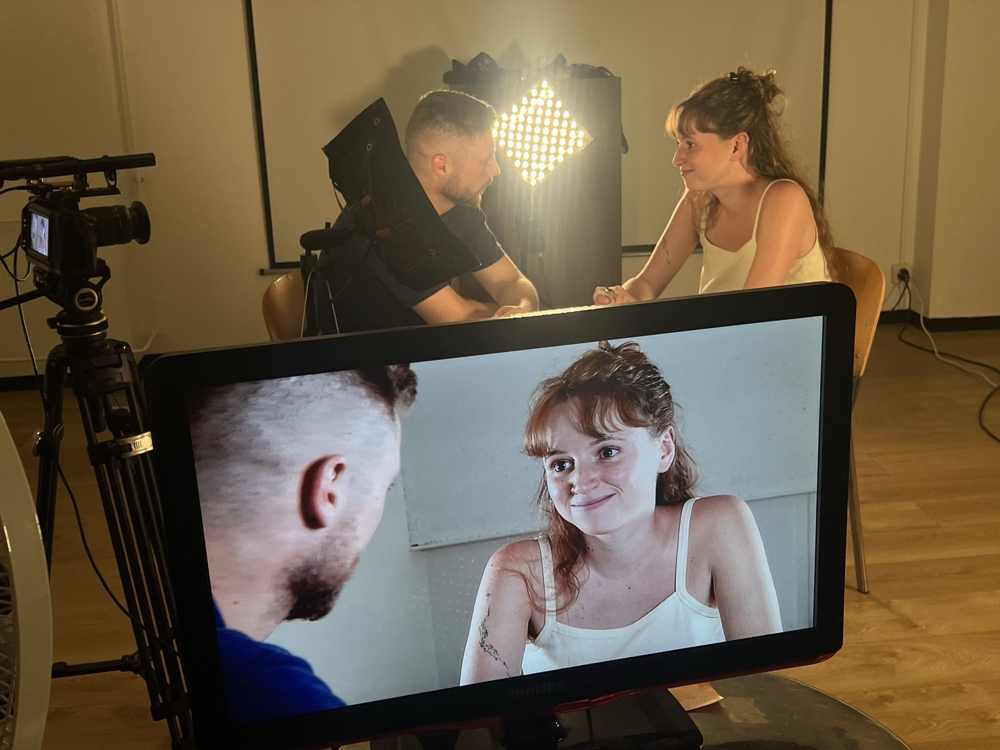
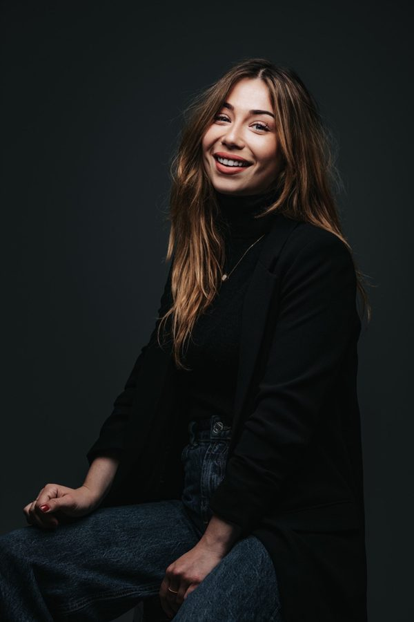
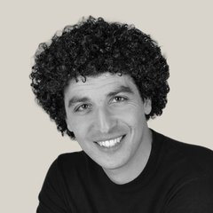
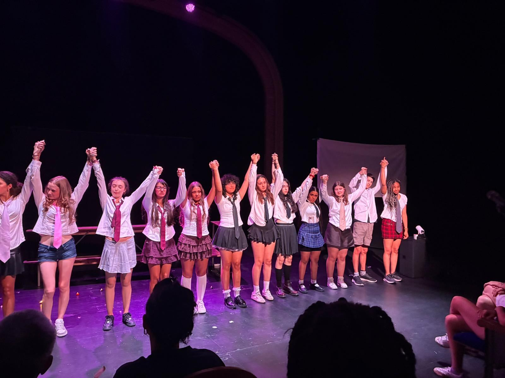
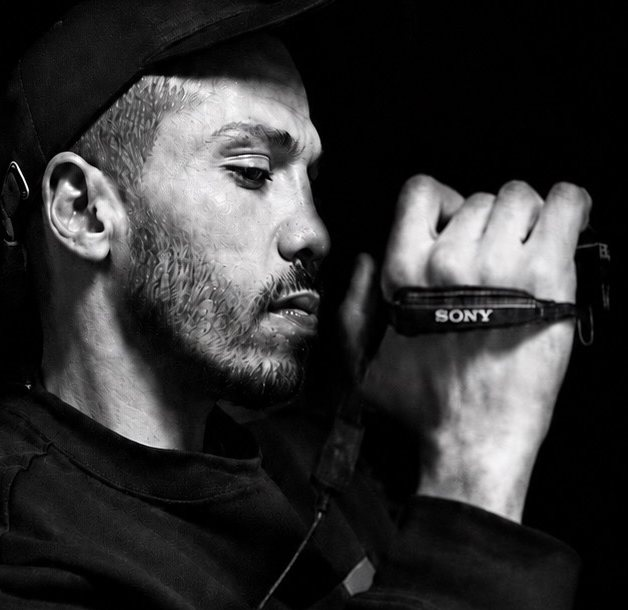
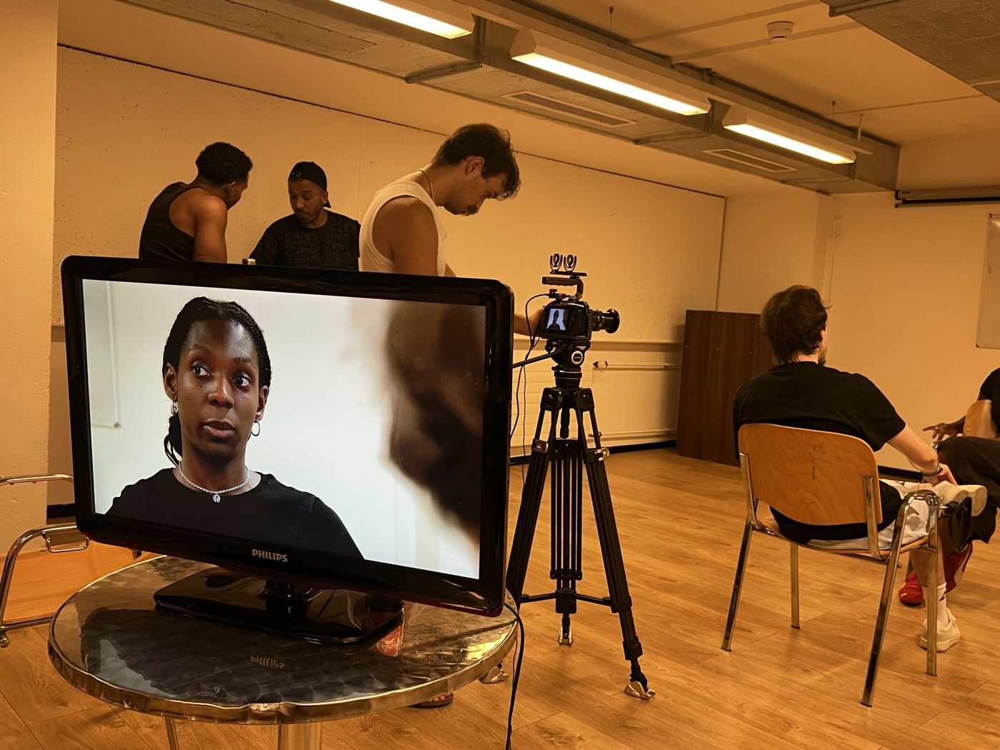
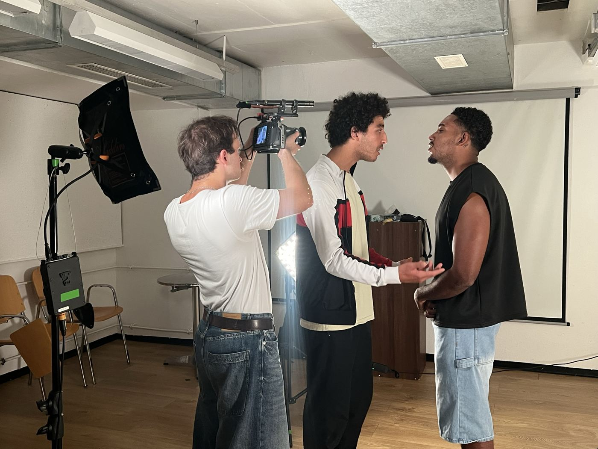
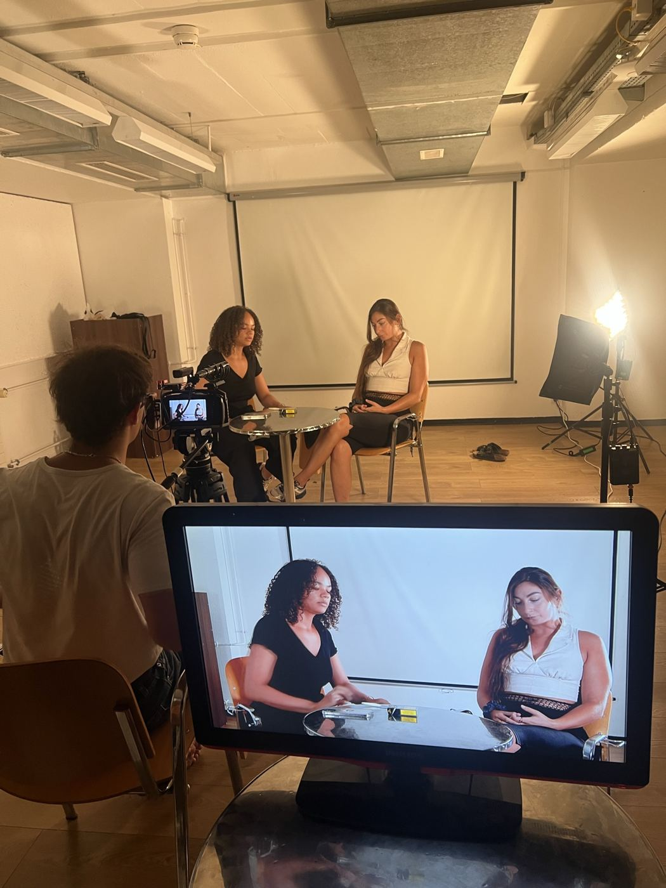
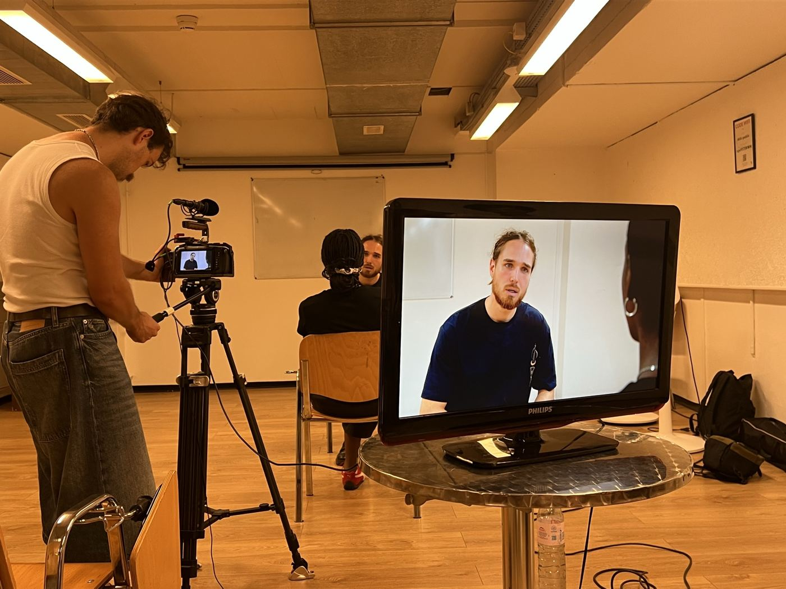

Chaque talent
mérite d'être révélé
Un lieu à Genève pour les comédiennes et comédiens qui veulent en faire leur métier, sans jamais cesser d'être eux-mêmes.

Personne ne joue comme vous.
C'est là que votre métier commence.
Je crois que les artistes qui nous bouleversent ne ressemblent à personne. Ils ont une histoire, une voix, un regard, une façon bien à eux d'occuper l'espace. Et un jour, ils ont osé s'en servir.
J'ai créé Atypik pour ça. Pour qu'il existe à Genève un endroit où l'on apprend d'abord à se connaître, parce qu'un jeu sincère commence là. Un endroit exigeant et bienveillant, où l'on a le droit d'essayer, de se tromper, de recommencer.
Et comme le talent seul ne suffit pas, on vous donne de quoi avancer : des textes, de l'écriture, et des rencontres avec celles et ceux qui font ce métier.
« Impose ta chance, serre ton bonheur et va vers ton risque. À te regarder, ils s'habitueront. »René Char
Shawna MunicchiFondatrice d'Atypik Théâtre et Professeure

Avec Aziz Meguellati et Roxane Schorpp, comédiens eux aussi, qui font vivre l'association à mes côtés.
Trois rendez-vous par semaine
Pour les comédiennes et comédiens semi-professionnels et professionnels, et pour les amateurs qui préparent leur entrée dans le métier.
Tarifs par mois
Places limitées dans chaque classe.

Sur scène
Une représentation publique en fin d'année
Fin juin, les élèves jouent devant le public, sur la scène d'un théâtre genevois.
Agenda

Mohamed Belhamar, une collaboration atypik
Directeur de casting
Il a travaillé sur Athena de Romain Gavras, sur De rouille et d'os, Dheepan et Un prophète de Jacques Audiard, sur la série Validé et sur de nombreux autres films.
Chaque mois, il anime à Genève un stage intensif de trois jours avec Atypik Théâtre : travail de scènes de cinéma, direction d'acteur face caméra et regard du casting.




Stage caméra et casting avec Mohamed Belhamar, Genève, août 2026.
Partenaires
Nos partenaires
Atypik Théâtre donne ses cours à la Maison Internationale des Associations et organise ses rencontres au TAMCO. L'association cherche encore un lieu à l'année pour répéter, créer et ouvrir ses portes aux habitants. Communes, lieux culturels, structures : vous avez un espace, ou l'envie de construire quelque chose ensemble ?
Écrivez-nous